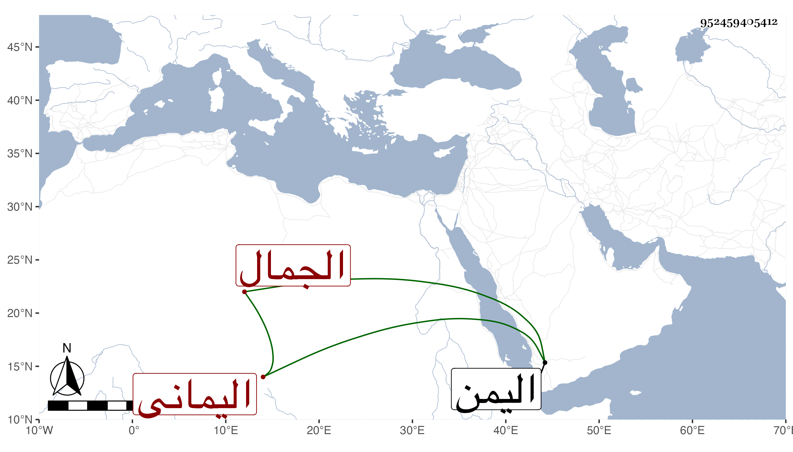

0902Sakhawi.DawLamic.ITO20230111-ara1.EIS1600.952459405412
Biography ID: 952459405412
192
محمد بن موسى بن إبرهيم بن محمد بن موسى بن الإمام أبي العباس أحمد ابن موسى بن عجيل الجمال المدعو عبد الرزاق اليماني ابن أخي إسماعيل بن إبراهيم الماضي . ولد سنة إحدى وثمانمائة ، كان رئيسا في أهله وبلاده متقدما عند السلاطين ذا جاه ووجاهة عند عرب تلك البلاد لمزيد إكرامه الوافدين ومهادنته لأمرائهم وأعيانهم ليتوصل بذلك إلى أغراضه وممن كان يرعاه ويرجع لقوله على بن طاهر صاحب اليمن كل ذلك مع تظلم أهل بلده منه لميله إلى التحصيل بكل طريق حتى أثرى وملك الأراضي والنخيل وكسب المواشي ومع ذلك فما تحاشى عن يمين فاجرة يتوصل بها إلى شيء دنيوي . مات في سنة سبع وثمانين وقد زاد على الثمانين عفا الله عنه .
